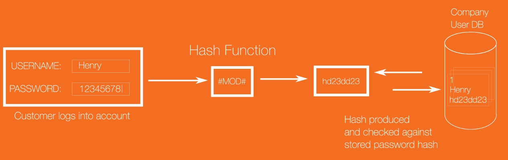
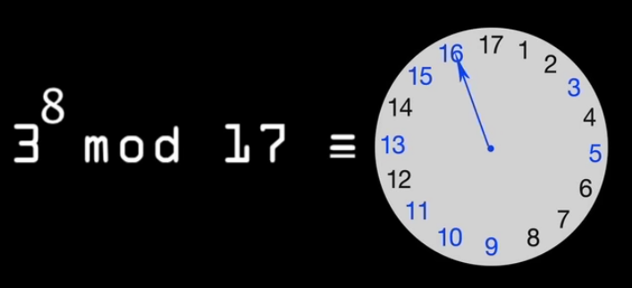

Cryptography
Introduction to Cryptography (5:49)
Grants confidentiality: sender and intended went where intended
Integrity: ensure no part of the message changed in transit
Authentication: ensure prove who you are
Non-repudiation: can't deny having sent it
Protect data at rest same way.
Cryptology: includes both Cryptography and Cryptoanalysis
Cryptography: protect data at rest
Cryptanalsis: determine if algorithm declared secure and analyzed
Encryption:
Data in motion: using VPN, online banking, EZ pass, credit/debit card
Data at rest: storing files+info on hard drive, phone, tablet
Plaintext: message or file in any human readable form.Includes binary files if you can be read without changing to different representation.
Encryption algorithm: produces ciphertext from plaintext.
Algorithm is wellknown and not secret. (e.g. AES, RSA)
Secrecy in the key => as an input. Need key for decryption otherwise can't read it.
Insecure channels can be internet, or air: cellular networks or wifi
Kerckhoffs's Principle
Only secrecy of the key provides security.
Types of Encryption
Symmetric Encryption (one key, used both encrypt and decrypt)
If man in the middle gets key, can read messages.
Older symmetric Encryption: DES, 3DES, RC4, AES.
Asymmetric Encryption (public and private key pair)
When encrypt with public, ciphertext only decrypt with private key
When encrypt with private, ciphertext only decrypt with public key
Need their public key. If given by insecure medium, it's OK. Key only used to encrypt not decrypt.
Assym much slower, than symmetric. Used just for encrypting a shared secret (like a symm key)
PGP for example email encryption, uses symmetric key for sender.
- PGP generate symm key for sender
- Plaintext message encrypted with symm key
- symm key encrypted with recipient's public key.
- same time, sender gives both encrypted msg and encrypted symm key.
- Destination uses private key to decrypt symm key.
- Now destination decrypt message with symm key
RSA:most widely used asymm encryption algorithm.
Used in SSL/TLS => secure socket layer, transport layer security for internet traffic
Hashing
To do with integrity, ensure no bits changed.
Hash function => results in message digest
Hashing is:
- variable length inputs
- fixed length outputs
- change one bit, hash completely different
- one way functions
Hashes are one way functions: cannot try all possible combos to go back to other way.
Hashing protect confidentiality of PW databases.
Passwords should be stored in hashed format.

Hash produced checked against stored hash.
Provides confidentiality for PWs.
Hashes cannot be reversed.
Stolen password hashes can beattacked using brute force attack, dictionary attack, rainbow table.
Current Hashing Standards:
SHA-2 (SHA-256, SHA-512, SHA-3): not appropriate for PWs for GPUs/ASICs and FPGA can break these too quickly.
PBKDF2, bcrypt, scrypt, Argon2 using SHA functions, should be the only ones for
Hashing Demo
Sample at fileformat.info/tool/hash.htm
Can see sample SHA-256 hash resulting from your source string.
Can check if someone manipulated an iso or other file:
onlinemd5.com => look at checksum of a given file against the developer's declared SHA256 checksum.
Verify a file's integrity:
download the signed hash (encrypted with private key of publisher)
Decrypt signed hash (w/ public key of publisher)
Computer hash
Compare decrypted hash with computed hash
Certificate Authority
A CA issues digital certificates.
CA is a trusted third party.
Example: Citibank gives CA their public key but keep private secret.
Website Demo
After you instruct web browser to go to a sample website (e.g. citibank.com):
- Browser transmits a list of algorithms it supports to the web server.
- Server selects algorithms to use and sends its digital certificates to the browser.
- Browser verifies the digital cert isn't revoked or expired.
- If cert valid: browser extract server's public key from cert.
- Then generates random value (pre-master secret) and encrypts it with server's public key
- Transmits cipher text to server.
- Server decrypts cipher text => gets pre-master secret
- Browser and server use same pre-master secret to create same master secret.
- Master secret used by browser and server to create symmetric session keys for encrypting decrypting and hashing
How does my browser know the key on the cert is the real Citibank key?
- CA hashed the public key of Citibank and encrypted with the CA's private key.
- This field on the digital cert is the 'digital signature'.

- Browser retrieves CA's digitial cert from a trusted root cert.
- This field on the digital cert is the 'digital signature'.
- My browser retrieved the CA's digital cert from a trusted root certificate store (stored locally on the machine) and decrypts the encrypted hash with CA public key found on CA's digital cert.
- Browser also hashes Citibank's public key itself, if two hashes match => we're good
Equality of:
- Go to CA's site and decrypt the signature with signer's public key
- vs: Check this against my browser hashing the target sites' public key hash function.
If match: then the hash of Citibank's public key could only have been encrypted by the CA.
If hash decrypts with the CA public key => could only have been encrypted by the CA's private key
Diffie and Hellman:
e.g. easy to mix two colors => hard to reverse the original colors.
One way function.
Both agree on a starting color (e.g. Y), both randomly pick a random private color.
Mix each person's private color with the public starting color. And send
Each add own color to mixture to arrive at shared secret color.
Number wise:
Modular arithmetic.
e.g. 46 mod 12.
46 mod 12 => 10
use prime modulus (17)
then primitive root of 3, and when raised to different exponents, it distributes uniformly around the clock.

3 => the 'generator'
If raised to exponent x, => 3^x mod 17 distributed across the different values.
Discrete logarithm problem.
e.g. agree on prime modulus and generator (17 and 3)
Alice picked a secret number (15) => and sends public value of '6' (3^15 mod 17 = 6) to Bob
Bob selects his secret number (13) => 3^13 mod 17 = 12 => gives to Alice
Alice does (bob's result raised to power of her private number) 12^15 and mod17 => 10
Shared secret (10)
Bob takes Alice's result (6 ^ 13) mod 17 => 10
They did the same calculation: (12^15 mod 17) vs (6^13 mod 17)
Consider how they got their 12 or 6.
12 (via 3^13) from 3^13^15 mod 17 = 3^15^13 mod 17.
Eve can't get the solution without either a 15 or 13 to start with.
XOR Cypher example:
e.g. take a private value of "J" => ascii value 01001010 (plaintext)
Pick a random cipher key: e.g. 01100010
Feed both into XOR: (0 XOR 0 => 0, 1 XOR 0 => 1...)
Activity: Using the XOR Cypher
Discussion: Using hashes to check integrity
Discussion: Apple and the FBI